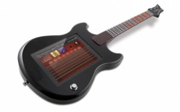

MiC by Apogee is the most compact studio quality USB microphone available for iPad®, iPhone® and Mac. About the size of an iPhone, MiC makes it easy to capture your best take with incredible quality, anywhere your music takes you. Record any sound you can imagine, from vocals to vibraphones, acoustic to lap steel guitars, pianos to percussion and everything in between, and build a track right on your iPad with GarageBand. MiC is also the perfect companion to JAM, Apogee’s studio quality guitar input. Never before has the personal studio been so portable or so powerful. Join the recording revolution with MiC, JAM and GarageBand on iPad.
Features
- PureDIGITAL connection for pristine sound quality
- Studio quality cardioid condenser microphone
- 44.1/48 kHz, 24-bit analog-to-digital conversion
- Studio quality microphone preamp with up to 40dB of gain
- No configuration, just plug in and record
- Control knob allows easy input level adjustment
- Multicolor LED for status indication and input level monitoring
- Designed for vocal and acoustic instrument recording
- Also great for recording interviews, podcasts, voice overs, and audio for DSLR video
- All metal construction
- Extremely compact and portable
- Works with GarageBand
- Bus-powered by iPad, iPhone or Mac (no batteries or external power required)
- Made in the U.S.A.
Full details and pricing are available here – http://www.apogeedigital.com/products/mic.php
Apogee launches MiC
On January - 31 - 2012 ADD COMMENTS
RME Reveals Fireface UCX
On January - 31 - 2012 ADD COMMENTS
RME have unveiled their latest half rack size audio interface, featuring a comprehensive list of analogue and digital connection options, that is compatible with PC, Mac, Linux, and iPad thanks to the Class Compliant mode. Read on for a full run down on this exciting new device –
RME has announced the Fireface UCX, a highly integrated pro audio solution in an ultra-compact format for studio and live recordings. It continues RME’s long tradition of designing compact high-end interfaces, packing into a half-rack size unit what usually would be spread out over two or three 19 inch panels.
In doing this the Fireface UCX marks a new packing record: 300 electronic components more than inside the already well-stocked Fireface UC! In a tremendous effort RME packed once again all the latest technologies, introduced with the award winning flagship UFX, plus a bunch of newly developed ones, into a half 19 inch housing with full mobile usability.
The result is an awesome combination of RME’s most successful products: Fireface UFX, Firefaces UC/400 and Babyface. The Fireface UCX is not just a smaller version of the smash hit UFX, with the X-core, the preamps and the complete effects engine, the UCX continues the tradition of RME’s tremendously successful compact interfaces, and combines it with the great usability of the Babyface through the included RME remote. With the Fireface UCX RME reinvented an already perfect product, by improving existing features and characteristics plus adding sophisticated new ones:
- Low Latency mastering grade converters with outstanding specifications.
- Two mic preamps with the premium technology from RME’s high-end recording bestsellers Micstasy and UFX, including the AutoSet overload protection.
- A newly developed Hammerfall audio core, supporting USB and FireWire with the maximum performance and ultra-low latency operation, combined with the legendary RME driver stability and maintenance, on both bus protocols.
- TotalMix FX with the complete Fireface UFX DSP engine, including all effects up to 192 kHz.
- Monitoring Controller: combining the impressive flexibility of the TotalMix FX monitoring tool set and the included RME Remote Control.
- RME’s unique DIGICheck metering and analysis toolbox for Windows PC and Mac.
- Plus support for RME’s Advanced Remote Control, active jitter suppression technology, professional reference level support, advanced stand-alone functionality, full 192 kHz operation, and last but not least two high speed MIDI I/Os.
- The Fireface UCX is the first professional audio interface with Class Compliant mode to work with Apple’s iPad, for perfect stereo up to 8 channel recording and playback, and the addition of truly professional I/Os.
18 Input / 18 Output channels of connectivity
- 8 x Analog I/O
- 2 x Mic/ Line Preamps, digitally controlled
- 2 x Line / Instrument inputs, digitally controlled
- 1 x SPDIF I/O coaxial
- 1 x ADAT I/O (or 1 x SPDIF I/O optical)
- 1 x Word Clock I/O
- 2 x MIDI I/O (via breakout cable)
- 1 x FireWire 400
- 1 x USB 2.0 (USB 3 compatible)
- Remote Control
For more details, check here – http://www.rme-audio.de/en_products_fireface_ucx.php
Audio Midi Connect
On January - 26 - 2012 ADD COMMENTS
Capture the notes from live vocals or instruments such as guitar, bass, or trumpet, and transcribe songs without taking your hands off of the instrument. The musical pitch of the live instruments are detected by the app, and translated into MIDI notes for applications such as Garage Band, Logic, or Pro Tools.
The app supports both Apple Core MIDI, and the DSMIDIWifi standard, making it easy to connect to Mac OSX, Windows, and Linux.
The pitch detection is fast enough to capture playing at moderate speeds in real time. For faster melodies, you can record the audio with the app, and then convert to MIDI notes later. You can also play slowly, and then adjust the speed of the MIDI playback with your sequencer. The app detects a single pitch at a time.
For anyone developing a sense of pitch, the app also provides a visual cue to the note being played — the display is large and clear, making it easy to see when your device is sitting on a music stand.
Grab RAudio Midi Connect now – 
Beat Slice
On January - 26 - 2012 ADD COMMENTS
Crush it, Mix it, Slice it, Shift it.
Take a perfect good song from your music library and destroy it with style!
Beat Slice is an expressive remixing tool that allows you to take your existing music and transform it in multiple creative ways.Built in effects include:
• Reverser: Reverse a beat
• low n high: Play a beat high or low
• Slicer: Cut it up and slice and glue it back together
• Electricity: Electrify the song with some shocking grooves
• Lo-Fi: Good old vinyl sound…
• Mute It: Skip it off and on like a DJ
Grab Beat Slice now – 
Alto’s MASTERLINK LIVE 16
On January - 25 - 2012 ADD COMMENTS
Seamlessly integrating your iPad’s beautiful touchscreen display, the MasterLink Live 16 and MasterLink Live 24 provide a mixing experience above and beyond any other mixer in their class. Their hybrid designs bridge the gap between high-quality analog consoles and sophisticated DSP technology.
The MasterLink Live 16 and MasterLink Live 24 offer channel compression, three-band semi-parametric EQ, four aux sends, four group buses, built-in Alesis digital effects and the unprecedented capability of the Alto Professional Live Drive App*. With the MasterLink Live 16 and MasterLink Live 24, Alto Professional is delivering iPad integration at its finest. Both give you affordable pro-grade performance and seamless integration with iPad or iPad 2.
- Seamlessly integrates iPad with fitted enclosure, 30-pin dock and exclusive software
- Works with iPad and iPad 2
- Process and record your main mix with Alto Professional’s Live Drive App*
- Dedicated analyzer/talkback microphone input
- 16 input channels: 10 Mono, 3 Stereo
- 10 high-headroom low-noise microphone preamps
- Built-in Alesis DSP, including reverbs, choruses and delays
- Three-band EQ with sweepable mid-frequency on all mono channels
- 10 independent channel compressors for dynamic control
- Four aux sends with aux one and two configurable as “post” or “pre” fader
- Four-bus operation, offering main and monitor mix separation
- Real-time audio analysis*
- 12-band parametric EQ*
- Compressor/limiter*
- Two-channel audio recording capability*
- Built-in programmable SPL meter*
For more details, check the Alto website – http://www.altoproaudio.com/products/masterlink-live-16
iConnectivity Unveils iConnectMUSE
On January - 25 - 2012 ADD COMMENTS
iConnectivity™, forward thinking developer of hardware accessories and applications for iPhone®, iPod touch® and iPad®**, announced its latest creation, iConnectMUSE™ at CES 2012 in Las Vegas.
For musicians looking to control their unique mixes through iOS or computer software while maintaining exceptional sound quality, look no further than iConnectMUSE™ – a palm-sized personal mini-mixer that combines several music accessories into one iOS controlled product, perfect for gigs at home or on the road.
The end result? Studio-quality analog audio converted to digital. With iConnectMUSE™, the user will experience higher quality audio processing, improved audio latency and the ability to share and mix audio through an iOS device, and even charge the iOS device at the same time.
Featuring six stereo inputs and six stereo outputs, each with its own unique mix, this ultra compact device may be small on size, but huge on functionality and features. If you’re a student musician exploring your own personal composition technique, a professional musician composing in a hotel room or on tour, or the performing musician who needs consistency moving from gig to gig, iConnectMUSE™ is the all-in-one, portable solution.
Additional features include two USB device ports, hub-able USB Host Port, two input and two output 1/4″ audio port jacks, a headphone monitor jack, Ethernet connection for network sharing, a MIDI pass-thru interface and limited DSP processing.
“iConnectMUSE™ is the future of audio mixing,” said Michael Loh, CEO of iConnectivity™. Its portability, expandability and enhanced functionality through software integration provides the conduit for music creativity for all musicians.”
iConnectMUSE™, available Summer of 2012, will retail for $299.99* (MSRP).
For further details drop by – http://iconnectivity.com
BEHRINGER X32 console (iPhone optional)
On January - 25 - 2012 1 COMMENT
Ever since the “dawn of digital” audio engineers the world over have had a love-hate relationship with their consoles. The new BEHRINGER X32 digital mixing console lets you focus on your event, instead of navigating a vast sea of knobs, buttons and menus like most other live digital mixers. X32 is intuitive and powerful with 40 processing channels and 25 mix buses, all equipped with serious signal processing (dynamics, EQ and inserts), which can be configured quickly to meet the demands of virtually any gig, large or small.Ready for your input
Use any combination of the local 32 console mic inputs or the networked digital snake inputs on stage—their audiophile quality programmable preamps always ensure full control, purity and impeccable dynamics. The dedicated channel strip section puts 17 backlit buttons and 13 rotary controls with LED-collars right at your fingertips for nuanced adjustment of each channel’s compressor, 4-band parametric EQ and much more. Each input and output channel strip features its own color backlit 128×64 graphic LCD, which provides vital channel information at-a-glance.
Virtual FX Rack
The onboard virtual FX Rack provides access to eight true-stereo, multi-effects processors (16 mono) including delay, chorus, dynamics—and it can run 4 production quality true-stereo reverbs concurrently with 8 channels of 31-band graphic equalization, all without the need for expensive, space-consuming external hardware.
High-count I/O options
I/O abounds with 32 high-end programmable mic preamps; 6 Aux Inputs on 1/4″ TRS; 16 balanced XLR Outs, plus balanced Control Room outputs on both XLR and 1/4″ TRS connectors. A single CAT5 cable from FOH to the stage can receive up to 48 channels of audio input—and deliver all bus outputs, along with 16 individual monitor feeds for BEHRINGER’s brand new P16 personal monitoring system.For a full rundown on the features click here –http://www.behringer.com/EN/products/X32.aspx
BEHRINGER Launches iAxe Guitar
On January - 25 - 2012 ADD COMMENTS
The iAxe is much more than an electronic controller or user interface for the iPad; which sits snugly inside the body of the guitar. Designed around an open eco-system of apps, the iAxe Guitar is based on BEHRINGER’s concept of “progressive discovery” to unlock the joy and fun of making music without the frustration that many beginner’s experience. Bridging the gap between games such as Guitar Hero and a real guitar, the iAxe is the perfect entry point for aspiring guitarists.
iAxe ships with a range of free apps, allowing a user to start playing right out of the box; learn to play the guitar, add percussion, bass tracks and even build and control a whole band. “Air Guitar” mode allows anyone to play classic songs with skill, while “On Stage” can trigger other instruments and let you play your own complex composition live. A second dock located on the headstock area allows the player to read music or lyrics from an iPod or iPhone while playing.
As a classically trained pianist who’s played on stage with some of the world’s best guitarists (such as Lee Ritenour) company founder and CEO Uli Behringer is listed as the patent’s Inventor and has been the key driving force behind the product’s development. “With the iAxe Guitar, I wanted to make a product that introduces everyone to the lifelong pleasure of making music by not only providing instant musical gratification but to also guide and grow the musician’s talent toward becoming a sophisticated guitar player. The iAxe Guitar uses the power of a tablet computer and the creativity of our partner developers to become a truly open platform for musical expression,” stated Uli Behringer.
Keep up to date on the details at – http://www.behringer.com/EN/Home.aspx
GUITAR APPRENTICE for shredders
On January - 25 - 2012 ADD COMMENTS
Get ready to shred like never before with GUITAR APPRENTICE from ION.
GUITAR APPRENTICE is a full-scale, electric-guitar-style controller that transforms iPad into an amazing guitar-learning experience. Simply place your iPad into GUITAR APPRENTICE’s fitted holder, open the GUITAR APPRENTICE app, and you’re ready to go. GUITAR APPRENTICE can be played anywhere as it requires no cables or external connections. GUITAR APPRENTICE’s strings can be strummed together or plucked individually, and its 14 fretboard-fret buttons mean you can easily play thousands of songs.
Learn guitar faster than ever before: Using the GUITAR APPRENTICE app, you can follow the lighted LED’s on GUITAR APPRENTICE’s neck and become a skilled guitarist in no time. The GUITAR APPRENTICE app even includes built-in effects, so you can make your GUITAR APPRENTICE sound classic, heavy or just plain outrageous as you mix and match distortion, reverb, flanger, delay effects and more. GUITAR APPRENTICE is Core MIDI and is compatible with dozens of popular iPad apps, including GarageBand®.
Learning guitar on iPad has never been this much fun: GUITAR APPRENTICE from ION.
For more info – http://www.ionaudio.com/products/details/guitarapprentice
miniyo-T…inbound
On January - 25 - 2012 ADD COMMENTS
miniyo-T is a control surface type MIDI controller for the iPhone or iPod Touch. It represents a Transport Bar from which Digital Audio Workstation (DAW)/sequencer software basic playing/recording operations can be initiated and monitored. miniyo-T is the iPhone/iPod Touch version of the Transport controller for eyoControl on iPad.
Main features
- Large timecode display, supporting multiple timecode formats and state indicators (*).
- Toggle between Timecode and Bar/Beats display (*).
- Large Play/Stop/Record/Fast Forward/Rewind buttons.
- An accurate scrub wheel, with associated scrub button.
- Enable/disable Loop mode.
- Mark beginning and end of loop (*).
- Set/clear/undo markers and navigate over them (prev/next) (*).
- Connectivity through CoreMIDI or eyoControl Server.
- Collaborative: using CoreMIDI connectivity, control your DAW from several devices. For example, start/stop song with one device while setting up markers from another device. Every device sharing the same session receive the timecode information.
- Support for Retina display for devices supporting it.
- Accessibility/VoiceOver support.
(*) may not be functional with every DAW software. Fully supported with Logic.
For more details check – http://eyosido.com/miniyo/t/